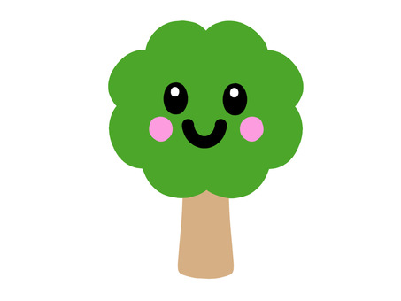

Katelynn Calvert is a third-year undergraduate student from Stafford, Virginia, studying art at the University of California, Santa Barbara. As a dedicated student, Katelynn embodies a spirit of creativity and innovation, constantly seeking new ways to express herself through various mediums. Her enthusiasm for artistic creation and the great outdoors shapes her unique perspective, often influencing her work and lifestyle. Katelynn's hardworking nature, innate creativity, and considerate demeanor set her apart in her field of study. Looking toward the future, Katelynn aims to forge a career combining art with modern technology. She's particularly interested in exploring opportunities in design or animation, where she can apply her artistic skills to digital platforms. Her praxis involves integrating her artistic vision with practical applications, ensuring her creations are both aesthetically pleasing and functional.
